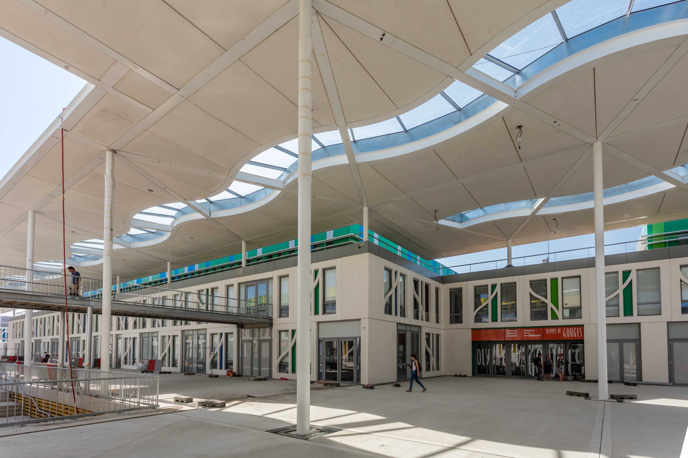
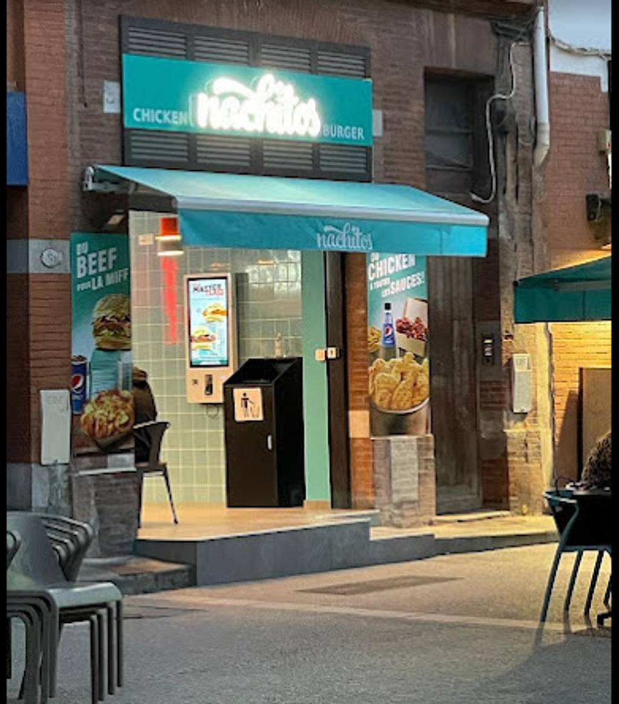

Mon Parcours et Mes Compétences
Formation Universitaire

- 2025 - En cours : Licence MIASHS (Mathématiques et Informatique Appliquées aux Sciences Humaines et Sociales) - UT2J, Toulouse.
- 2024 - 2025 : Licence 1 de Psychologie - UT2J
Expérience Professionnelle

Employé polyvalent - Nach! Toulouse (Décembre 2025 - En cours)
Travail en restauration rapide au 9 Place La Fourcade. Gestion de la caisse, service client, et préparation en cuisine avec une équipe dynamique.
Mes Projets
Pour l'instant, je n'ai pas encore eu l'occasion de réaliser beaucoup de projets personnels. Toutefois, mon objectif professionnel à long terme serait d'intégrer une grande entreprise technologique ou aéronautique de la région, comme Thales ou Airbus.
Compétences Techniques
- Programmation : Go, Python, R
- Développement Web : HTML5, CSS
- Bases de données : SQL
- Outils : Notion, VS Code, RStudio, terminal Unix
Ressources de référence : MDN Web Docs et la Documentation officielle de Go.